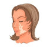

Pityriasis alba
Rx:
1. Oint hydrocortisone 1% bd
2. Mild Emollient cream
Or oint Vit A+D
3. Sunscreen SPF 30
معمولا بدون درمان هم به صورت خود به خود خوب میشن
سایر درمان ها شامل : لیرز ، پسورالن به همراه PUVA ، پماد تاکرولیموس
نکته ۱: از کورتون ها ضعیف و به مدت محدود استفاده کنید تا دچار عوارض پوستی و آتروفی نشه
نکته ۲ : به والدین توضیح بدید که ضایعات ظرف چند ماه و به آهستگی خوب میشن و خیلی عجله نداشته باشن
نکته ۳ : نواحی درگیر شده تا حد امکان باید از مواجهه با نور آفتاب محافظت بشن چون تیره شدن پوست ، ضایعات رو واضح تر نشون میده
1️⃣ درماتیت آتوپیک
2️⃣ درماتیت تماسی
3️⃣ پسوریازیس
4️⃣ ویتیلیگو
Leprosy 5️⃣
Seborrhea 6️⃣
7️⃣ تینه آ ورسیکالر
8️⃣ تینه آ بدن
9️⃣ پتریازیس روزه آ
🔟 Nevus depigmentosus